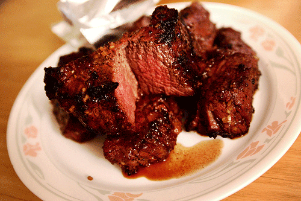

We’ve been gone for a while, but we return now to deliver you news on some of Andrew’s favorite things to eat. First on the list is well done steak. “I love pink, but I can’t stand any in the meat I eat,” explains Andrew. “I like my steak well done, Julie style. Burnt all over and the color of my skin inside.”
He goes on further to say “I don’t see how anyone can eat anything less than well done. Cow vampires, all of them, I say. I’d take a stake and shove it into their hearts, if I could. Someday, I will become ruler of the world and destroy any chef that cooks meat less than well done… especially medium rare. *shudder*”
The following is WRONG:
 *picture from juan23
We asked Andrew his recommended method of cooking steak and he was kind enough to give us two ways! “My first method is easy, but quite delicious. Take the chunk of meat and put it on a microwave safe dish. Stick that sucker into the microwave for about 50 minutes, then tada!!! Awesome… I’m gonna start one right now. brb ^_^”
…
“Okay, the second method is to get a charcoal grill going and stick your pound of meat on it. Walk away for a while and watch your favorite episode of Dharma & Greg, then come back and check on it. At this point, at least one side should have a very nice blackened texture to it. Flip it. Go watch your second favorite episode of Dharma & Greg, come back and remove the meat. Both sides should be quite black (perfect!). Let it sit on your dinner table for about two hours, enough time to watch a whole DVD of Dharma & Greg, then enjoy!”
We would like to thank Andrew very much for his kind cooking lessons. Until next time!